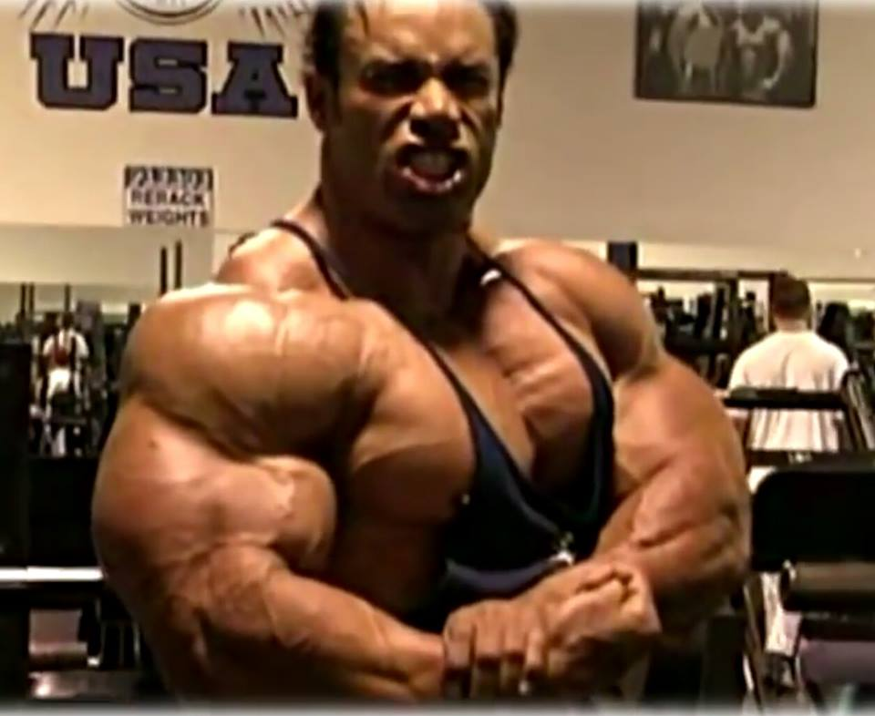
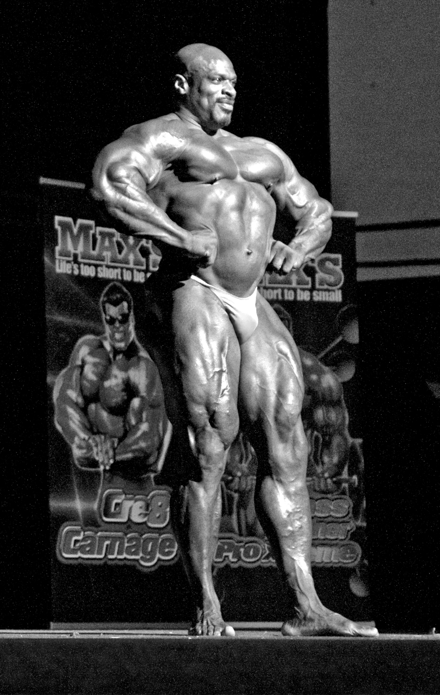
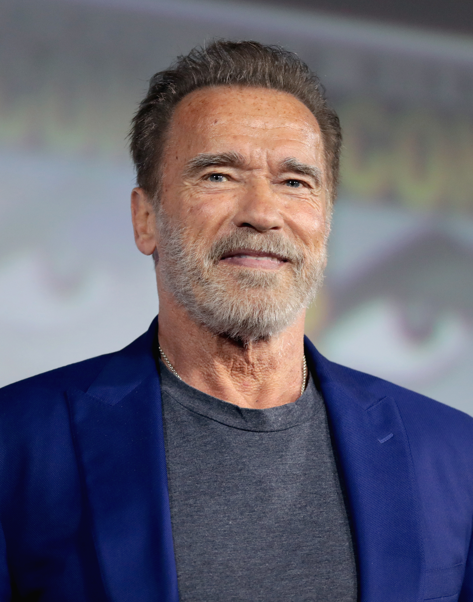
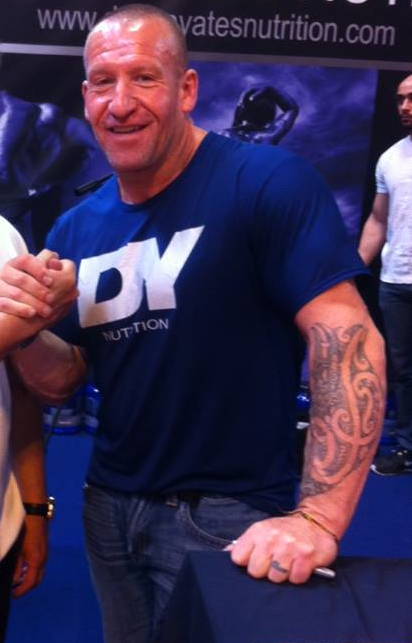

Exercício de força
Pesos livres, aparelhos rudimentares e demonstrações circenses já chamavam atenção na Europa. A cultura física reunia saúde, força atlética e melhoria do corpo.
Arquivo histórico · 1890—Hoje
Da musculação nas exposições europeias aos maiores palcos da culturismo mundial: conheça como nasceu, evoluiu e se dividiu o esporte.
Conhecer a história ↗
01 / A ORIGEM
O fisiculturismo moderno nasceu na Europa, impulsionado pela crença de que o corpo humano podia ser desenvolvido de forma deliberada, disciplinada e artística.
Pesos livres, aparelhos rudimentares e demonstrações circenses já chamavam atenção na Europa. A cultura física reunia saúde, força atlética e melhoria do corpo.
Sandow apresentou poses controladas ao lado de provas de força. Sua combinação de músculos definidos, disciplina e espetáculo ajudou a formar o modelo moderno da figura muscular.
O concurso organizado por Sandow no Royal Albert Hall avaliou desenvolvimento físico diante do público e é frequentemente citado como marco do fisiculturismo competitivo.
As revistas de cultura física, clubes de levantamento de peso e práticas comerciais ganharam força nos Estados Unidos. Bernarr Macfadden, Joe Weider e outros profissionais ampliaram o público.
Joe e Ben Weider fundaram a Federação Internacional de Fisiculturismo. Regulamentos, circuitos de shows e categorias passaram a organizar o esporte internacionalmente.
Joe Weider criou o Olympia para dar aos campeões um palco anual mais prestigioso. Larry Scott venceu a primeira edição, em Nova York, e começou a tradição da divisão Open.
Arnold Schwarzenegger tornou a estética musculosa globalmente reconhecível. Proporções, cintura estreita, poses e simetria se tornaram tão importantes quanto volume.
Televisão, suplementos, academias comerciais, redes sociais e federações profissionais levaram o esporte a públicos maiores. A massa extrema deu lugar, gradualmente, a categorias de peso, proporção e estética.
Men’s Physique estreou no Olympia em 2013; 212 consolidou limites de peso; Classic Physique chegou ao Olympia em 2016, buscando proporções clássicas com controle de massa.
02 / LENDAS ABSOLUTAS
Uma seleção dos atletas que redefiniram estética, popularidade e domínio competitivo do fisiculturismo masculino.

1998–2005

1970–1975, 1980

1992–1997
2× Arnold Classic · 23 títulos profissionais

Men's Open · Estados Unidos
Nascido em Monroe, Louisiana, Ronnie Coleman estudou contabilidade e trabalhou como policial em Arlington, Texas, antes de alcançar o topo do fisiculturismo. Começou a treinar com apoio de colegas e conquistou seu cartão profissional em 1991.
Entre 1998 e 2005 venceu oito Mr. Olympia consecutivos, dividindo o recorde histórico com Lee Haney. Tornou-se famoso pelo poder de carga em exercícios pesados, densidade muscular extrema e frase “Yeah buddy!”. Lesões acumuladas nas costas e quadris exigiram cirurgias posteriormente.
Seu legado une o auge da era Open à popularização global das redes sociais e documentários sobre treino pesado. Coleman mostrou que disciplina policial, trabalho em turnos e dedicação podem coexistir com uma carreira esportiva, sem separar pressão física de preparação profissional.

Men's Open · Áustria / Estados Unidos
Arnold Schwarzenegger nasceu em Thal, Áustria, em 1947. Começou no fisiculturismo na adolescência, venceu o Mr. Universe aos 20 anos e mudou-se aos Estados Unidos para competir e expandir oportunidades profissionais.
Conquistou sete Mr. Olympia, entre 1970 e 1975 e novamente em 1980. Sua combinação de cintura estreita, peito amplo, braços grandes, inteligência de pose e confiança transformou o padrão competitivo e o levou ao cinema e à política.
Além dos títulos, criou pontes duradouras entre esporte, entretenimento e comunicação. O Arnold Sports Festival recebeu seu nome e tornou-se um dos maiores circuitos esportivos do mundo, incluindo fisiculturismo, artes marciais e modalidades ligadas à saúde.

Men's Open · Reino Unido
Dorian Yates nasceu em Birmingham, Inglaterra, em 1962. Após um período difícil na juventude, encontrou na musculação disciplina e propósito; iniciou sua carreira profissional ainda na década de 1980, preferindo treinos intensos e privados.
Venceu seis Mr. Olympia consecutivos, de 1992 a 1997. Ficou conhecido como “Shadow” por competir raramente fora da temporada, manter o conteúdo de treino fechado ao público e priorizar densidade, espessura e separação muscular.
Seu método popularizou conceitos modernos de treino, incluindo menos séries, maior intensidade e recuperação prolongada. No auge, reduziu o formato tradicional à musculação com foco em falha controlada, preparando a transição da era estética para a era da massa extrema.

Classic Physique · Brasil
Ramon Rocha Queiroz nasceu em Acrelândia, no Acre, em 1992. A carreira ganhou estrutura a partir da preparação em academias locais e da exposição nas redes sociais, onde tornou-se referência de técnica e estética clássica para jovens brasileiros.
Conquistou o Arnold Classic Ohio em 2023, tornando-se o primeiro brasileiro campeão da etapa, e chegou ao segundo lugar do Mr. Olympia Classic Physique em 2022, 2023 e 2024. Sua trajetória representou a consolidação da presença brasileira na categoria Classic Physique.

Classic Physique · Canadá
Chris Bumstead, conhecido como Cbum, nasceu em Ottawa em 1994. Começou na cultura física por influência familiar e passou rapidamente dos circuitos amadores aos shows profissionais, destacando-se pela cintura estreita, ombros largos e proporções clássicas.
Foi vice-campeão do Olympia de Classic Physique em 2017 e 2018, conquistou o título em 2019 e manteve o domínio até 2024, acumulando seis troféus consecutivos. Sua popularidade expandiu a categoria e levou o fisiculturismo Classic a audiências jovens e digitais.

Men's Open · Estados Unidos
Kevin Levrone nasceu em Baltimore, Maryland, em 1964. Cresceu em uma família ligada à música e chegou a atuar como cantor e compositor. Essa formação criou uma presença teatral que se tornou parte central de sua apresentação de palco.
Venceu mais de vinte competições profissionais, incluindo dois títulos do Arnold Classic, mas nunca conseguiu a coroa máxima do Mr. Olympia. Ficou em segundo lugar em quatro edições, enfrentando nomes como Dorian Yates, Shawn Ray, Flex Wheeler e Ronnie Coleman em uma das fases mais disputadas da história.
É conhecido pela capacidade de melhorar o físico em poucas semanas, pela combinação de estrutura, densidade e largura de ombros e pelo domínio das poses. Sua ausência de um título Olympia é parte de sua trajetória, mas não diminuiu sua influência sobre estética, marketing e showmanship.
Men's Open · Brasil
Eduardo Corrêa é um dos principais fisiculturistas profissionais brasileiros. Ganhou destaque por representar o país em competições internacionais da IFBB e por unir detalhes musculares de Open com um físico longo, equilibrado e bem apresentado.
Sua carreira é marcada por títulos nacionais, participação em Arnold Classic Brasil e presença em palcos profissionais nos Estados Unidos. Corrêa tornou-se referência para atletas brasileiros por demonstrar que talento local pode alcançar circuitos internacionais sem perder uma ligação direta com academias e escolas de treino do país.
04 / EM MEMÓRIA
O legado destes atletas vive no palco, nas aulas e na inspiração que deixaram. Onde a causa não foi confirmada publicamente, o site não especula.

Origem: jamaicano-americano nascido em Kingston, mudou-se para os Estados Unidos ainda jovem e começou a competir em fisiculturismo amador. Nos circuitos profissionais destacou-se pela largura das costas, densidade lombar e aparência fluida no palco.
Carreira: conquistou sua primeira vitória profissional em 2010 e levou anos construindo o posicionamento necessário para disputar o Olympia. Apesar das colocações intermediárias, manteve evolução constante até interromper o domínio de Phil Heath.
Legado: em 2018 venceu o Mr. Olympia, tornando-se o primeiro atleta nascido na Jamaica a conquistar o título. Foi celebrado pela precisão estética, domínio das poses frontais e pela ideia de que consistência de carreira pode superar uma ascensão rápida.
Morte: faleceu aos 46 anos. A causa não foi confirmada por um comunicado oficial completo neste arquivo histórico; por isso, este site não associa sua morte a substâncias ou outras hipóteses sem comprovação pública.
Origem: nascido em Maplewood, Nova Jersey, e veterano do Exército dos Estados Unidos. Sua experiência militar influenciou disciplina, postura, resistência e uma postura serena durante apresentações profissionais.
Carreira: começou no circuito amador da NPC e conquistou o cartão profissional ao vencer o NPC National Championships. Deixou de lado uma carreira puramente ligada à massa extrema para valorizar proporções clássicas, pernas desenvolvidas e poses alongadas.
Legado: venceu o Arnold Classic de 2017 e chegou entre os principais colocados em diversas edições do Olympia. Sua presença era marcada por uma combinação rara de porte grande e movimento leve, inspirando atletas que desejavam estética clássica sem perder densidade.
Morte: morreu aos 44 anos. A família informou uma parada cardíaca; reportagens posteriores citaram infarto. Não existe neste projeto uma lista conclusiva de fatores pessoais ou médicos, e informações individuais não devem ser transformadas em diagnóstico retrospectivo.

História: Ganley passou pela cultura física em uma fase em que dedicação, disciplina de treino e presença de palco eram construídas longe da exposição digital atual. Sua trajetória é lembrada pela intensidade física, pela busca constante de evolução e pelo desejo de competir com os melhores.
Legado: homenageado conforme solicitado, com representação visual no acervo local. Sua identidade esportiva completa deve ser confirmada por uma fonte histórica específica.
Morte: nenhuma causa é apresentada sem identificação comprovada da pessoa.
se eu me dedico 100%, não tem como eu ter só 50% de chance de vencer
Sua passagem foi breve, mas seu legado sera eterno.
Origem: nascido no Tennessee, tornou-se conhecido ainda jovem pelo porte excepcional, representando uma geração de atletas que atingiu a elite profissional antes dos 30 anos. Por sua altura, massa e apelido “Big Country”, passou a chamar atenção internacional.
Carreira: venceu o North American Championships na categoria peso-pesado em 2014, conquistou o cartão profissional e venceu o Europa Orlando Pro em 2016. No Olympia de 2016 chegou ao oitavo lugar, aos 25 anos, demonstrando trajetória rápida de ascensão.
Legado: foi lembrado por tamanho, densidade muscular e potencial para dominar a divisão Open nas décadas seguintes. Sua história costuma ser usada para abordar a pressão do esporte profissional, expectativas precoces e saúde dos atletas, sem conclusões médicas simplistas.
Morte: morreu aos 26 anos, em agosto de 2017. Relatórios públicos indicaram engasgo como causa imediata; não existem bases neste projeto para afirmar ou negar fatores adicionais sem documentos médicos ou informações oficiais.
03 / DIVISÕES
A divisão clássica do fisiculturismo profissional. Avalia massa muscular, densidade, separação entre grupos musculares, condicionamento, proporção e presença de palco. Não há limite máximo de peso oficial, apesar de a altura e o peso serem considerados pela seleção dos juízes.
O atleta apresenta poses obrigatórias de frente, lado e costas, além de uma comparação em grupo e uma coreografia curta. A prioridade costuma ser equilíbrio: não basta ter volume; ombros, tronco, pernas e braços precisam manter proporção, simetria e conexão visual.
A fase de preparação envolve treino de volume, fases alimentares, controle de água e posagem. Resultados oficiais variam com o ano e não existem provas científicas que permitam escolher “o maior de todos” isoladamente; Ronnie Coleman, Lee Haney e Arnold Schwarzenegger aparecem entre os maiores pelos títulos e influência.
Ronnie Coleman, Lee Haney e Arnold Schwarzenegger. Coleman e Haney conquistaram oito títulos no Olympia, ambos em épocas diferentes; Arnold venceu sete e marcou a popularização global do esporte.
Criada para atletas profissionais com até 212 lb, aproximadamente 96 kg. O limite elimina competidores de massa extrema e incentiva densidade, proporção e simetria em corpos menores. O nome passou a representar oficialmente tanto o conjunto da categoria quanto o título Olympia.
A estrutura de poses segue o Open, mas o peso é o limite principal. Os juízes procuram um físico completo, com pernas desenvolvidas, costas largas, braços harmoniosos e boa execução de poses obrigatórias. A divisão recompensa densidade relativa, não apenas quantidade de músculo.
A categoria surgiu da antiga divisão peso-pesado limitada, ganhou identidade própria no início dos anos 2010 e passou a ser chamada 212 Olympia em 2012. Ao longo do tempo, as regras buscaram distinguir atletas de maior altura ou massa extrema do Open, sem tornar o limite impossível de alcançar.
Flex Lewis dominou com sete títulos consecutivos no Olympia entre 2012 e 2018. Kevin English venceu o título em 2010 e 2011, consolidando o período anterior à mudança de nome. Kamal Elgargni venceu em 2019 e Shaun Clarida voltou ao topo em 2020, 2022 e 2024.
Inspirada nos físicos da era de Steve Reeves e Arnold Schwarzenegger, valoriza proporções clássicas: ombros largos, cintura estreita, pernas proporcionais e apresentação artística. Há limites de peso associados à altura, definidos pela federação e atualizados em seus regulamentos.
A categoria possui poses frontais obrigatórias, porém permite escolhas de coreografia e poses clássicas. Em vez de perseguir o máximo de massa, o atleta precisa respeitar a silhueta. Diagrama corporal, fluidez, vacuidade muscular e equilíbrio visual têm grande importância.
Apresentada pela IFBB Pro League em 2016, teve Danny Hester como primeiro campeão do Olympia. O formato foi criado como alternativa ao Open para recuperar uma estética associada à era dourada sem eliminar condicionamento, densidade ou musculatura.
Chris Bumstead venceu seis edições consecutivas entre 2019 e 2024 e se tornou referência global pela proporção, pose e popularidade. Breon Ansley venceu em 2017 e 2018, enquanto Ramon Queiroz, Urs Kalecinski e Ryan Terry também marcaram períodos relevantes.
Apresentado em bermudas ou shorts de praia, o objetivo é um físico atlético, harmônico e acessível visualmente. Peitoral, ombros, braços e tronco recebem atenção, mas não são exigidas poses obrigatórias de grupos isolados como em fisiculturismo.
Há voltas em frente e nas costas, poses diante do painel central e apresentações individuais. A avaliação considera desenvolvimento geral, tamanho relativo dos ombros, definição, postura, confiança, roupa adequada e capacidade de transmitir qualidade atlética sem uma aparência excessivamente pesada.
O formato estreou no Olympia profissional em 2013 para aproximar o esporte de atletas com estética atlética e público de lifestyle. Sua diferença central é estética, não ausência de preparo: os atletas seguem dietas rígidas, treinamento, posagem e condicionamento.
Jeremy Buendia venceu quatro vezes de 2014 a 2017. Brandon Hendrickson dominou vários ciclos entre 2018 e 2024, com títulos em 2018, 2019, 2020 e 2023. Ryan Terry é outro campeão recorrente e venceu, entre diferentes ciclos, o Olympia e shows internacionais do circuito.
Curadoria baseada em resultados públicos e títulos oficiais de IFBB Pro League / Olympia. Maioridade esportiva é interpretativa.
05 / REGISTROS
Espaço reservado para fotos da feira. Os arquivos podem ser adicionados aqui depois, sem alterar o restante da página.